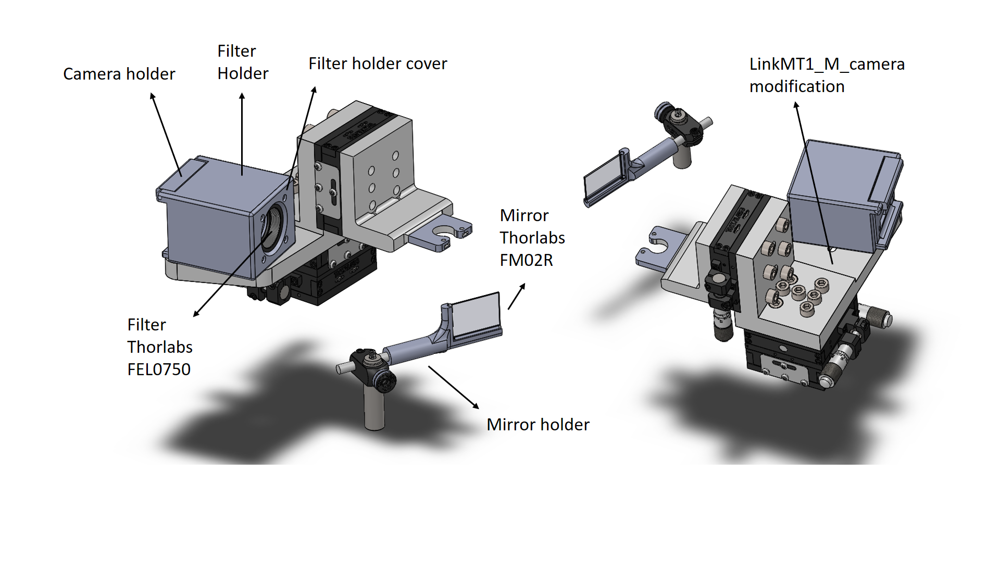

Camera-mirror complex for pupil tracking
A camera can be added to the ring-shaped instrument platform to record e.g. eye or facial movements. We chose a web camera with a small footprint, low weight and USB connectivity through the rotary joint. It lacks an IR filter. We used an IR LED for illumination and a Thorlabs FEL0750 - Ø1" long pass filter mounted on a CP35/M - 30 mm cage Plate using an SM1L03 lens tube.
The image of the animal is reflected on an FM02R red hot mirror ((25 mm x 36 mm) with an incidence angle of 45°. The mirror position can be adjusted with Thorlabs post elements, and the camera can be rotated and translated for adequate positioning.
|  |
|---|
| Figure 1. Camera with hot mirror |
Bill of materials
| Component | Quantity | Supplier | Reference |
|---|---|---|---|
| Mirror holder | 1 | 3D printed | STP file, STL file |
| Camera holder | 1 | 3D printed | STP file, STL file |
| Filter holder | 1 | 3D printed | STP file, STL file |
| Filter holder cover | 1 | 3D printed | STP file, STL file |
| M2 screw | 4 | - | - |
| M3 screw | 6 | - | - |
| M2 nuts | 4 | - | - |
| M6 screw | 1 | - | - |
| M6 nut | 1 | - | - |
| FEL0750 - Ø1" Long pass Filter | 1 | Thorlabs | link |
| CP35/M - 30 mm Cage Plate | 1 | Thorlabs | link |
| SM1L03 - SM1 Lens Tube | 1 | Thorlabs | link |
| FM02R - 25 mm x 36 mm Red Hot Mirror | 1 | Thorlabs | link |
| ELP webcam | 1 | Amazon | link |